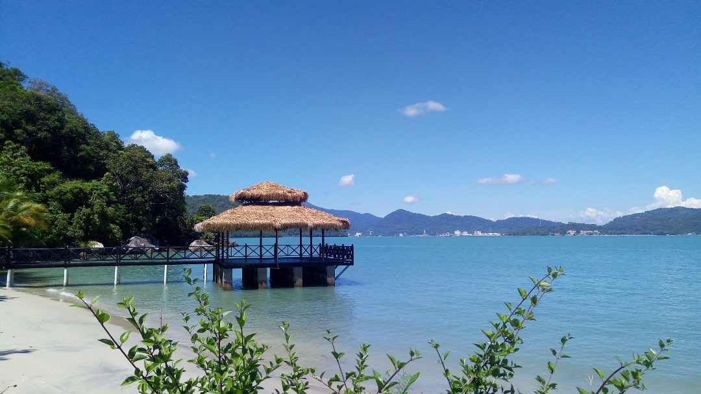

Interesting Destination in Kedah: Tuba Island
Tuba Island (Pulau Tuba), located just off the coast of Langkawi in Kedah, is one of the few inhabited islands in the Langkawi archipelago and remains largely untouched by mass tourism. Known for its serene villages, mangrove forests, traditional fishing lifestyle, and laid-back atmosphere, Tuba Island offers a peaceful escape for those seeking nature, culture, and authentic local experiences. Unlike its bustling neighbour Langkawi, Pulau Tuba retains its rustic charm, making it a hidden gem for eco-tourists, cyclists, and culture lovers.
Popular Activities on Tuba Island::
- Cycling Around the Island: Rent a bicycle or motorbike to explore the island’s quiet roads, local villages, and scenic coastal views at your own pace.
- Mangrove and Cave Exploration: Discover the island’s rich natural ecosystem, including limestone caves such as Gua Wang Buluh and unique mangrove forests.
- Island Hopping: From Tuba, you can take small boat trips to nearby islands like Pulau Dayang Bunting or Pulau Singa Besar.
- Fishing Activities: Join a fishing trip with local fishermen or simply enjoy watching the daily routines of the island’s fishing community.
Travel Preparation::
Tuba Island is accessible via a 15–20 minute boat ride from Kuah Jetty in Langkawi. Accommodations on the island are limited, mostly homestays or small chalets, so it's best to book in advance if staying overnight. Whether you're looking to slow down and reconnect with nature or experience authentic Malay island culture, Tuba Island offers a refreshing and memorable retreat from the modern world..